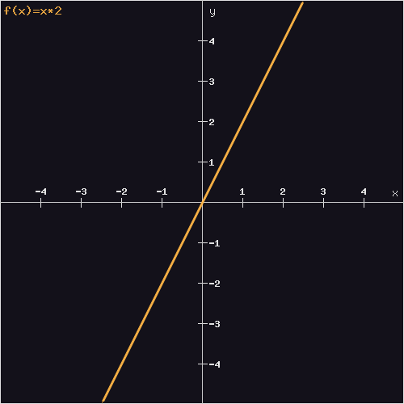

A Paradigm Shift
React, Redux and FRP in action
Setting expectations:
- Three Big Rs (React, Redux, FRP).
- We gonna see some example code…
- … But we gonna talk even more about theory and new concepts.
- First, focus on the big picture… details for later.
- Review of good practices and advices from the experts.
Our Whole App as a Pure Function
Pure functions
I. “Separate mutation from calculation.”
Which means avoid side effects.
That makes pure functions modular (portable, parallelizable).
II. “Separate input from environment.”
Which means that them work as maps.
function double(x) {return x * 2;}
x => x * 2
{1 => 2, 2 => 4, 3 => 6}

That makes pure functions predictable (testeable, memoizable).
React
Normally described as the V/VC in MVC…
Uses virtual-dom to improve DOM manipulation performance…
Unopininated and small API footprint…
… but enough of features, also and most importantly it claims:
View/UI must be described as a pure function of our app state.
props => componentDOM
React is Modular.
Redux
An architecture that takes care of the M in MVC.
Unidirectional data flow…
As React it’s unopinionated and with a minimal API…
… we can resume it’s ethos or claiming as:
Every state mutation must be described as a pure function of previous state and a given action.
(state, action) => state
Redux is Predictable.